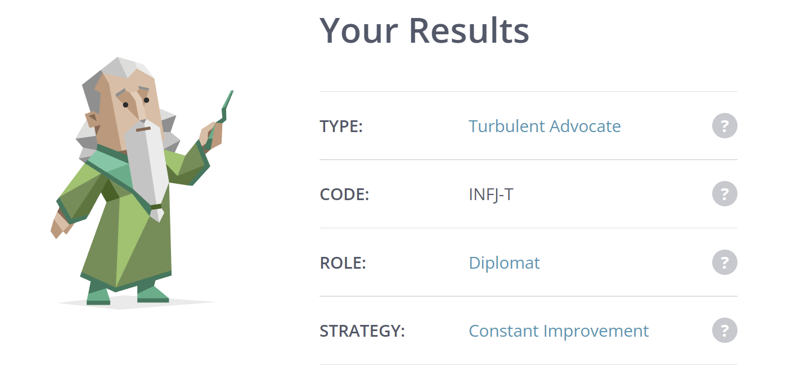
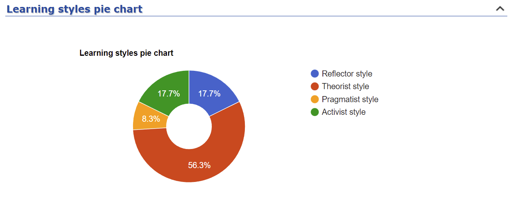
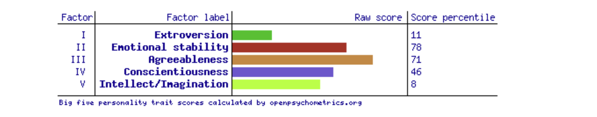

My name is Yiwei Lin, And my English name is Luke, which is I chose from Bible. My student number is s3838211 and my student email is s3838211@student.rmit.edu.au, my home country is china, I was graduated from University High in Parkville. My mother language is mandarin and keep learning English. I am interested in sleep, eat, play video game with others and kpop, I can not live without those.
I am interest in web programming now, after I study java programming, database, security, I also interest in AI and networking, I will take course in those fields. My project idea also may concern AI technique. To be honest, first time I interest in IT is in year 10, we should think about what should we learn in university, compare with science, arts, commerce and so on, I just prefer IT because it sounds like more logical and a sense of modern. And also I also feel IT is the trade of the future, For example, cryptocurrencies are not only involved in IT but also in financial worlds. There are also new energy vehicles that need to be used in the system of human-computer interaction is also impacting the traditional automotive industry.
To be honest, at first I chose RMIT only because of its awesome location and the amazing appearance of many of its buildings, but after learning about it, RMIT has good local recognition and employment rates in Australia.
During my studies at RMIT, I first hope to determine my future career direction, whether it is software engineering or Internet and mobile Internet or computer hardware industry. Then I will specialize in the industry of my choice.
I chose this position at Boeing as a Junior Systems Administrator, a position that involves implementing, securing and maintaining computer systems used in a test and development environment. I chose this position because he had a technical need for a related network.
One of the highlights of this job ad is their culture. They are hiring women, Aboriginal or Torres Strait Islander and former defense personnel, which demonstrates the diversity and inclusiveness of their company culture. The main skills required for this position are proficiency with Windows desktop/server and Linux systems, as well as an understanding of virtualization technologies such as VMware and Hyper-V. Importantly, some network troubleshooting and resolution skills are also required. I don't have any experience with Linux and virtual machines yet, but I believe I will use them in my future studies at RMIT. I will also be taking a minor in networking technology. They also have learning assistance available on this job page and they also do not require years of experience compared to most other companies.
From Myers-Briggs Type Indicator (MBTI) test,my personality type is: INFJ-T.
From study style test i am Theorist style.
That is the result of Big 5 Factors.
I am friendly and optimistic as well as introverted and traditional.My study tests indicate that I enjoy using logic to think, and that my personality type appreciates objectivity and reason. Generally speaking, I am quite passionate about fundamental presumptions, rules, theories, models, and logical reasoning. My ideal team should be made up entirely of introverts. This implies that I schedule as few meetings as I can. Individual team members frequently choose to work alone or with very comfortable coworkers. When team duties can be divided up into specific tasks for individual team members, this strategy works well. Working alone enables people to concentrate on their task without interruptions as long as they are skilled, motivated, and focused. Working remotely is a particularly good option for introverted teams.
My project idea is an "intelligent assistant", a system that relies on the interaction between the smart home ecosystem and intelligent voice assistants, software, hardware and the owner. This assistant can intelligently help handle the user's daily use of home appliances, and can also rely on hardware to monitor the user's health status or the state of the house to make appropriate measures or suggestions. Another interesting feature of this system is to integrate resources and then make more user-friendly options to the user, a simple example, the user has just finished weighing on the networked scale, the system compares the weight of this time and the last time and then compares people of the same gender and height, if the weight is too heavy he will give various suggestions from the search engine or professional software, leading the user to the nearby gym, when users search for high-calorie junk food when pop-up alerts. This smart assistant sounds a bit like a super simplified version of Jarvis from Iron Man.
This system uses the relevant facilities and functions to achieve integration and build a more complete home environment and family schedule management system to enhance home security, convenience, comfort, and achieve the purpose of environmental protection and energy saving. Imagine the following scenario, when going to work tired all day, on the way home from work intelligent assistant asks you whether you need to run a hot bath, if it is necessary then the intelligent housekeeper will put a bathtub of hot water early, the water heater will only start heating when needed, and then automatically shut down, so as to ensure the normal use of the user, but also to achieve the purpose of energy saving and environmental protection. When the user returns home, with the door lock is opened, the home security system automatically lift the indoor alarm, the corridor lights slowly lit, air conditioning, fresh air system automatically start. The favorite background music is also playing softly, think of a beautiful thing. Every night, before you go to sleep, just ask the intelligent assistant to turn on the "good night" mode, you can control all the lights and electrical devices that need to be turned off, while the security system automatically turns on the alarm state, and all the curtains will automatically close. The next morning with the alarm clock users can eat breakfast recipes developed by the intelligent assistant and then plan the day, and before the user goes out just one command can turn off all the lights and appliances at home and then turn on the alarm again, the floor robot can also start working so that it will not interfere with or noisy user's daily life at home.
Due to the current limitations of technology, intelligent assistants can now only be monitored through a combination of software and hardware to health. Hardware, intelligent assistants through the bracelet, watch and other smart wearable devices as a carrier to help users to master their basic health information, such as smart wearable devices are equipped with heart rate detection function, blood sugar monitoring function, blood oxygen saturation, sleep monitoring, etc.. Software, in terms of the system will be involved in this regard, such as health use time function, list the time spent by the user on various types of APP, and through the analysis of the relevant reasonable advice. Regarding the hardware, as there are certain differences in the various sensors of different devices, the accuracy of monitoring will certainly form a certain deviation. Therefore, most of these functions may be for reference only, as for those third-party professional institutions for each user's data proposed recommendations, most of these services or to charge extra, the current stage of health monitoring function or belong to the chicken ribs, it can only provide reference, but in some cases he may be able to timely find some not easy to find the body problems at the same time let the user aware of and then go to the hospital to do a checkup.
This intelligent assistant can also be for physical defects or the elderly to make certain help, such as the hearing-impaired people to "read" the sound, before the hearing-impaired users see people around talk and laugh will feel confused, nervous. Now through the intelligent assistant to identify the application of the scene, he can always see the content of the conversation of colleagues on the phone, tablet. If a friend tells a joke, the corners of the hearing-impaired user's mouth will also rise when he sees the text. The visually impaired can easily control electrical switches by voice without having to fumble slowly; the cognitively impaired can use machine algorithms through intelligent assistants to divide lengthy documents into concise and clear phrases. Users can install smart locks for the elderly in their homes, using intelligent assistants to warn the elderly who have not been out for a long time or have not returned, and real-time notification to users, care for the safety of the elderly living alone, the home of the elderly living alone installed a "safety valve", you can also use this to care about the life of the elderly to close the distance between each other.
The technology and tools needed for this intelligent assistant are almost all achievable now, most of all by the Internet of Things tandem home automation, wearable technology, connected health and devices with remote monitoring functions. Among these devices (smart lights, electric curtains, smart floor sweepers, smart door locks, smart scales, smart cameras, fresh air systems, background music systems, smart toilets, etc.) and smart voice assistants are now all realized. It is possible to connect different brands of devices in series and whether AI is smart enough to analyze the existing data so as to give suggestions or make actions is the current difficulty.
Compared with the ordinary intelligent voice assistant, the intelligent assistant seems to have some thoughts of its own. His biggest role is to facilitate people's daily life, can use the mouth never use the hands, and compared to the user control smart home or in the use of cell phones, you want to say that it is smart? This is actually a lot of remote control is concentrated in the phone only. My purpose is that the intelligent assistant can be like a relatively low-cost and very understand the user's personal assistant and then assist the user to deal with the daily and management of the house, which saves the user's time can have energy to focus on other things also improve the quality of life.